Last updated: 2018-05-09
Code version: 119c6b2
library("cowplot")
library("dplyr")
library("edgeR")
library("ggplot2")
library("MASS")
library("tibble")
library("Biobase")
source("../code/utility.R")
theme_set(cowplot::theme_cowplot())
# The palette with grey:
cbPalette <- c("#999999", "#E69F00", "#56B4E9", "#009E73", "#F0E442", "#0072B2", "#D55E00", "#CC79A7")fname <- Sys.glob("../data/eset/*.rds")
eset <- Reduce(combine, Map(readRDS, fname))
anno <- pData(eset)Note: Using the 20 % cutoff of samples with no cells excludes all the samples
## calculate the cut-off
cut_off_reads <- quantile(anno[anno$cell_number == 0,"mapped"], 0.82)
cut_off_reads 82%
1309921 anno$cut_off_reads <- anno$mapped > cut_off_reads
## numbers of cells
sum(anno[anno$cell_number == 1, "mapped"] > cut_off_reads)[1] 978sum(anno[anno$cell_number == 1, "mapped"] <= cut_off_reads)[1] 349## density plots
plot_reads <- ggplot(anno[anno$cell_number == 0 |
anno$cell_number == 1 , ],
aes(x = mapped, fill = as.factor(cell_number))) +
geom_density(alpha = 0.5) +
geom_vline(xintercept = cut_off_reads, colour="grey", linetype = "longdash") +
labs(x = "Total mapped reads", title = "Number of total mapped reads", fill = "Cell number")
plot_readsNote: Using the 40 % cutoff of samples with no cells excludes all the samples
## calculate unmapped ratios
anno$unmapped_ratios <- anno$unmapped/anno$umi
## cut off
cut_off_unmapped <- quantile(anno[anno$cell_number == 0,"unmapped_ratios"], 0.40)
cut_off_unmapped 40%
0.4362152 anno$cut_off_unmapped <- anno$unmapped_ratios < cut_off_unmapped
## numbers of cells
sum(anno[anno$cell_number == 1, "unmapped_ratios"] >= cut_off_unmapped)[1] 221sum(anno[anno$cell_number == 1, "unmapped_ratios"] < cut_off_unmapped)[1] 1106## density plots
plot_unmapped <- ggplot(anno[anno$cell_number == 0 |
anno$cell_number == 1 , ],
aes(x = unmapped_ratios *100, fill = as.factor(cell_number))) +
geom_density(alpha = 0.5) +
geom_vline(xintercept = cut_off_unmapped *100, colour="grey", linetype = "longdash") +
labs(x = "Unmapped reads/ total reads", title = "Unmapped reads percentage")
plot_unmapped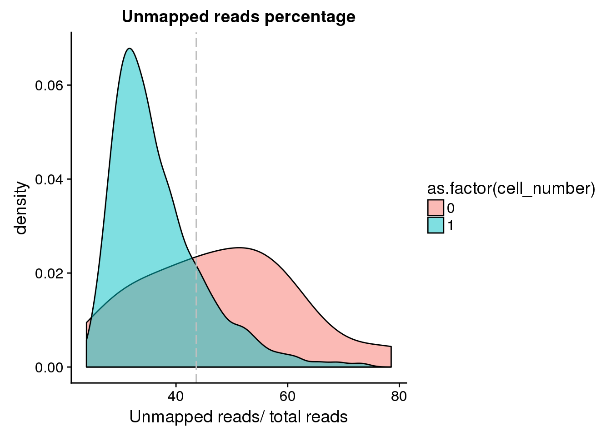
Look at the unmapped percentage per sample by C1 experimnet and by individual.
unmapped_exp <- ggplot(anno, aes(x = as.factor(experiment), y = unmapped_ratios, color = as.factor(experiment))) +
geom_violin() +
geom_boxplot(alpha = .01, width = .2, position = position_dodge(width = .9)) +
labs(x = "C1 chip", y = "Unmapped reads/ total reads",
title = "Unmapped reads percentage") +
theme(legend.title = element_blank(),
axis.text.x = element_text(angle = 45, hjust = 1, vjust = 1))
unmapped_indi <- ggplot(anno, aes(x = chip_id, y = unmapped_ratios, color = as.factor(chip_id))) +
geom_violin() +
geom_boxplot(alpha = .01, width = .2, position = position_dodge(width = .9)) +
labs(x = "C1 chip", y = "Unmapped reads/ total reads",
title = "Unmapped reads percentage") +
theme(legend.title = element_blank(),
axis.text.x = element_text(angle = 45, hjust = 1, vjust = 1))
plot_grid(unmapped_exp + theme(legend.position = "none"),
unmapped_indi + theme(legend.position = "none"),
labels = letters[1:2])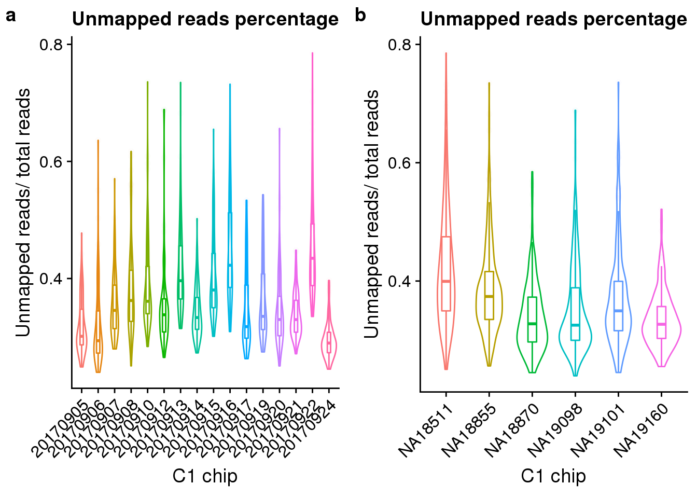
## calculate ercc reads percentage
anno$ercc_percentage <- anno$reads_ercc / anno$mapped
## cut off
cut_off_ercc <- quantile(anno[anno$cell_number == 0,"ercc_percentage"], 0.20)
cut_off_ercc 20%
0.179423 anno$cut_off_ercc <- anno$ercc_percentage < cut_off_ercc
## numbers of cells
sum(anno[anno$cell_number == 1, "ercc_percentage"] >= cut_off_ercc)[1] 223sum(anno[anno$cell_number == 1, "ercc_percentage"] < cut_off_ercc)[1] 1104## density plots
plot_ercc <- ggplot(anno[anno$cell_number == 0 |
anno$cell_number == 1 , ],
aes(x = ercc_percentage *100, fill = as.factor(cell_number))) +
geom_density(alpha = 0.5) +
geom_vline(xintercept = cut_off_ercc *100, colour="grey", linetype = "longdash") +
labs(x = "ERCC reads / total mapped reads", title = "ERCC reads percentage")
plot_ercc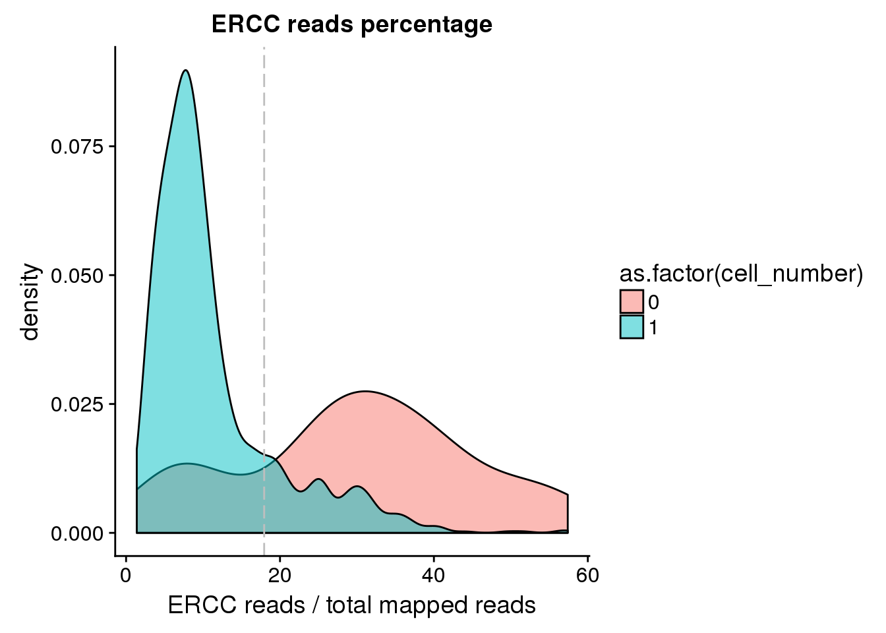
Look at the ERCC spike-in percentage per sample by C1 experimnet and by individual.
ercc_exp <- ggplot(anno, aes(x = as.factor(experiment), y = ercc_percentage, color = as.factor(experiment))) +
geom_violin() +
geom_boxplot(alpha = .01, width = .2, position = position_dodge(width = .9)) +
labs(x = "C1 chip", y = "ERCC percentage",
title = "ERCC percentage per sample") +
theme(legend.title = element_blank(),
axis.text.x = element_text(angle = 45, hjust = 1, vjust = 1))
ercc_indi <- ggplot(anno, aes(x = chip_id, y = ercc_percentage, color = as.factor(chip_id))) +
geom_violin() +
geom_boxplot(alpha = .01, width = .2, position = position_dodge(width = .9)) +
labs(x = "C1 chip", y = "ERCC percentage",
title = "ERCC percentage per sample") +
theme(legend.title = element_blank(),
axis.text.x = element_text(angle = 45, hjust = 1, vjust = 1))
plot_grid(ercc_exp + theme(legend.position = "none"),
ercc_indi + theme(legend.position = "none"),
labels = letters[1:2])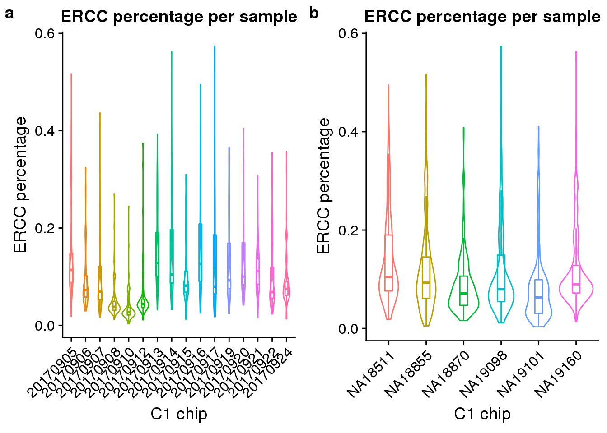
## cut off
cut_off_genes <- quantile(anno[anno$cell_number == 0,"detect_hs"], 0.80)
cut_off_genes 80%
6291.8 anno$cut_off_genes <- anno$detect_hs > cut_off_genes
## numbers of cells
sum(anno[anno$cell_number == 1, "detect_hs"] > cut_off_genes)[1] 1040sum(anno[anno$cell_number == 1, "detect_hs"] <= cut_off_genes)[1] 287## density plots
plot_gene <- ggplot(anno[anno$cell_number == 0 |
anno$cell_number == 1 , ],
aes(x = detect_hs, fill = as.factor(cell_number))) +
geom_density(alpha = 0.5) +
geom_vline(xintercept = cut_off_genes, colour="grey", linetype = "longdash") +
labs(x = "Gene numbers", title = "Numbers of detected genes")
plot_gene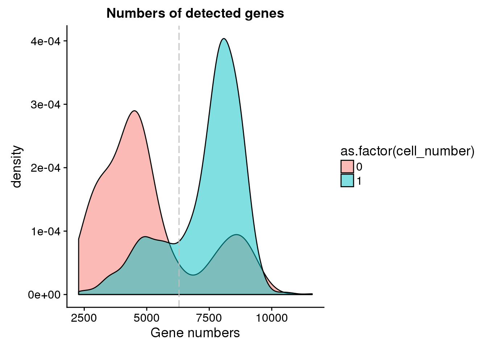
number_exp <- ggplot(anno, aes(x = as.factor(experiment), y = detect_hs, color = as.factor(experiment))) +
geom_violin() +
geom_boxplot(alpha = .01, width = .2, position = position_dodge(width = .9)) +
labs(x = "C1 chip", y = "Number of genes detected",
title = "Number of genes per sample") +
theme(legend.title = element_blank(),
axis.text.x = element_text(angle = 45, hjust = 1, vjust = 1))
number_indi <- ggplot(anno, aes(x = chip_id, y = detect_hs, color = as.factor(chip_id))) +
geom_violin() +
geom_boxplot(alpha = .01, width = .2, position = position_dodge(width = .9)) +
labs(x = "C1 chip", y = "Number of genes detected",
title = "Number of genes per sample") +
theme(legend.title = element_blank(),
axis.text.x = element_text(angle = 45, hjust = 1, vjust = 1))
plot_grid(number_exp + theme(legend.position = "none"),
number_indi + theme(legend.position = "none"),
labels = letters[1:2])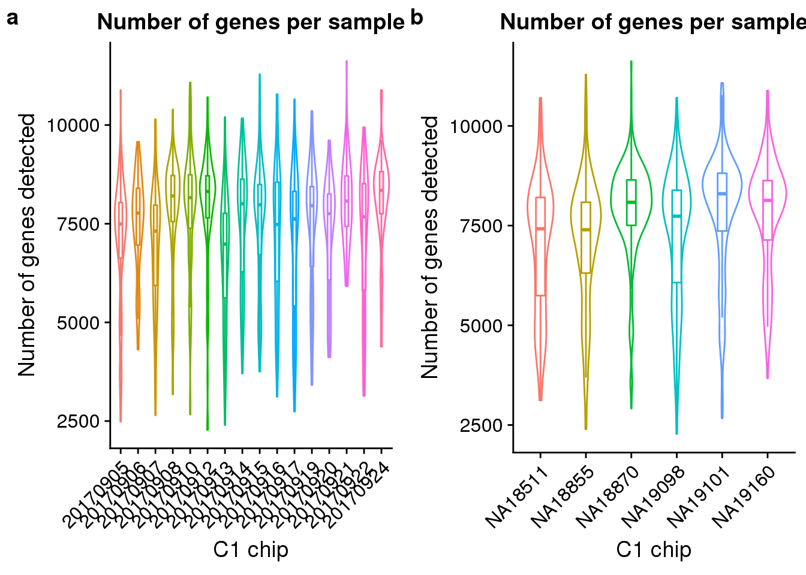
## plot molecule number of egfp and mCherry
egfp_mol <- ggplot(anno[anno$cell_number == 0 |
anno$cell_number == 1 , ],
aes(x = mol_egfp, fill = as.factor(cell_number))) +
geom_density(alpha = 0.5) +
labs(x = "EGFP molecule numbers", title = "Numbers of EGFP molecules")
mcherry_mol <- ggplot(anno[anno$cell_number == 0 |
anno$cell_number == 1 , ],
aes(x = mol_mcherry, fill = as.factor(cell_number))) +
geom_density(alpha = 0.5) +
labs(x = "mCherry molecule numbers", title = "Numbers of mCherry molecules")
plot_grid(egfp_mol + theme(legend.position = c(.5,.9)),
mcherry_mol + theme(legend.position = "none"),
labels = letters[1:2])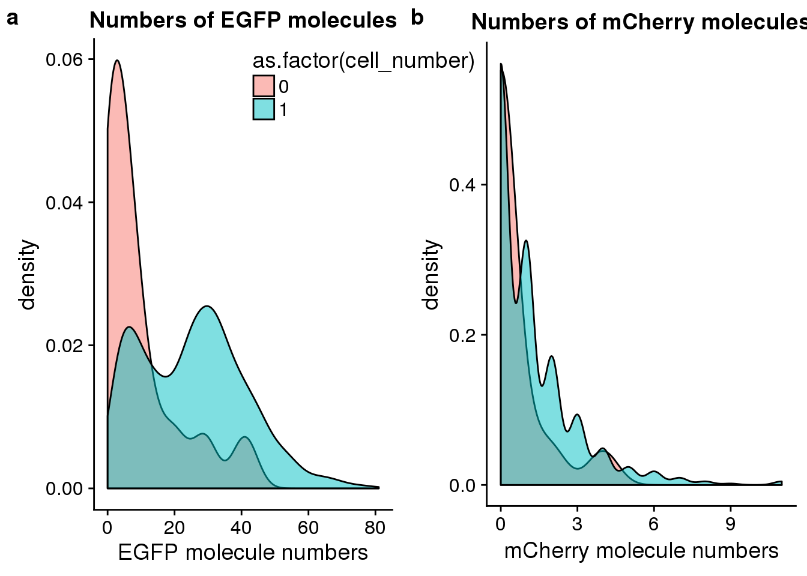
## create 3 groups according to cell number
group_3 <- rep("two",dim(anno)[1])
group_3[grep("0", anno$cell_number)] <- "no"
group_3[grep("1", anno$cell_number)] <- "one"
## create data frame
data <- anno %>% dplyr::select(experiment:concentration, mapped, molecules)
data <- data.frame(data, group = group_3)
## perform lda
data_lda <- lda(group ~ concentration + molecules, data = data)
data_lda_p <- predict(data_lda, newdata = data[,c("concentration", "molecules")])$class
## determine how well the model fix
table(data_lda_p, data[, "group"])
data_lda_p no one two
no 0 0 0
one 16 1317 147
two 0 11 45data$data_lda_p <- data_lda_p
## identify the outlier
outliers_lda <- data %>% rownames_to_column("sample_id") %>% filter(cell_number == 1, data_lda_p == "two")
outliers_lda sample_id experiment well cell_number concentration mapped
1 20170910-H09 20170910 H09 1 1.6540139 3013565
2 20170914-B04 20170914 B04 1 1.3324572 2284753
3 20170914-C04 20170914 C04 1 1.2389752 2489489
4 20170916-A08 20170916 A08 1 0.4900687 2276922
5 20170921-A12 20170921 A12 1 1.7967793 1868421
6 20170921-C01 20170921 C01 1 1.4171401 1543484
7 20170921-D04 20170921 D04 1 1.0853582 1753336
8 20170921-H09 20170921 H09 1 0.5802048 1541776
9 20170924-A04 20170924 A04 1 0.9856825 1414428
10 20170924-E01 20170924 E01 1 0.4581647 1817801
11 20170924-E03 20170924 E03 1 0.4484874 1924140
molecules group data_lda_p
1 281516 one two
2 190473 one two
3 205586 one two
4 169065 one two
5 205868 one two
6 202756 one two
7 255148 one two
8 415411 one two
9 253058 one two
10 187137 one two
11 346383 one two## create filter
anno$molecule_outlier <- row.names(anno) %in% outliers_lda$sample_id
## plot before and after
plot_before <- ggplot(data, aes(x = concentration, y = molecules / 10^3,
color = as.factor(group))) +
geom_text(aes(label = cell_number, alpha = 0.5)) +
labs(x = "Concentration", y = "Gene molecules (thousands)", title = "Before") +
scale_color_brewer(palette = "Dark2") +
theme(legend.position = "none")
plot_after <- ggplot(data, aes(x = concentration, y = molecules / 10^3,
color = as.factor(data_lda_p))) +
geom_text(aes(label = cell_number, alpha = 0.5)) +
labs(x = "Concentration", y = "Gene molecules (thousands)", title = "After") +
scale_color_brewer(palette = "Dark2") +
theme(legend.position = "none")
plot_grid(plot_before + theme(legend.position=c(.8,.85)),
plot_after + theme(legend.position = "none"),
labels = LETTERS[1:2])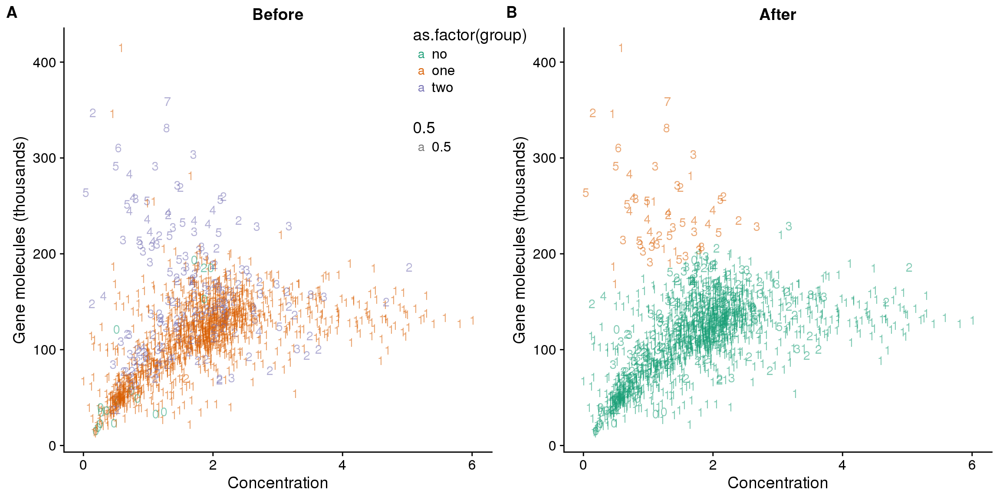
## calculate convertion
anno$ercc_conversion <- anno$mol_ercc / anno$reads_ercc
anno$conversion <- anno$mol_hs / anno$reads_hs
## try lda
data$conversion <- anno$conversion
data$ercc_conversion <- anno$ercc_conversion
data_ercc_lda <- lda(group ~ ercc_conversion + conversion, data = data)
data_ercc_lda_p <- predict(data_ercc_lda, newdata = data[,c("ercc_conversion", "conversion")])$class
## determine how well the model fix
table(data_ercc_lda_p, data[, "group"])
data_ercc_lda_p no one two
no 5 20 0
one 11 1303 166
two 0 5 26data$data_ercc_lda_p <- data_ercc_lda_p
## identify the outlier
outliers_conversion <- data %>% rownames_to_column("sample_id") %>% filter(cell_number == 1, data_ercc_lda_p == "two")
outliers_conversion sample_id experiment well cell_number concentration mapped molecules
1 20170908-C07 20170908 C07 1 2.6936993 850577 95163
2 20170920-A10 20170920 A10 1 0.1369852 81371 28680
3 20170921-H09 20170921 H09 1 0.5802048 1541776 415411
4 20170924-A04 20170924 A04 1 0.9856825 1414428 253058
5 20170924-E03 20170924 E03 1 0.4484874 1924140 346383
group data_lda_p conversion ercc_conversion data_ercc_lda_p
1 one one 0.1126820 0.08186312 two
2 one one 0.3585794 0.24727354 two
3 one two 0.2716902 0.13085675 two
4 one two 0.1809263 0.09389137 two
5 one two 0.1813526 0.10260360 two## create filter
anno$conversion_outlier <- row.names(anno) %in% outliers_conversion$sample_id
## plot before and after
plot_ercc_before <- ggplot(data, aes(x = ercc_conversion, y = conversion,
color = as.factor(group))) +
geom_text(aes(label = cell_number, alpha = 0.5)) +
labs(x = "Convertion of ERCC spike-ins", y = "Conversion of genes", title = "Before") +
scale_color_brewer(palette = "Dark2") +
theme(legend.position = "none")
plot_ercc_after <- ggplot(data, aes(x = ercc_conversion, y = conversion,
color = as.factor(data_ercc_lda_p))) +
geom_text(aes(label = cell_number, alpha = 0.5)) +
labs(x = "Convertion of ERCC spike-ins", y = "Conversion of genes", title = "After") +
scale_color_brewer(palette = "Dark2") +
theme(legend.position = "none")
plot_grid(plot_ercc_before,
plot_ercc_after,
labels = LETTERS[3:4])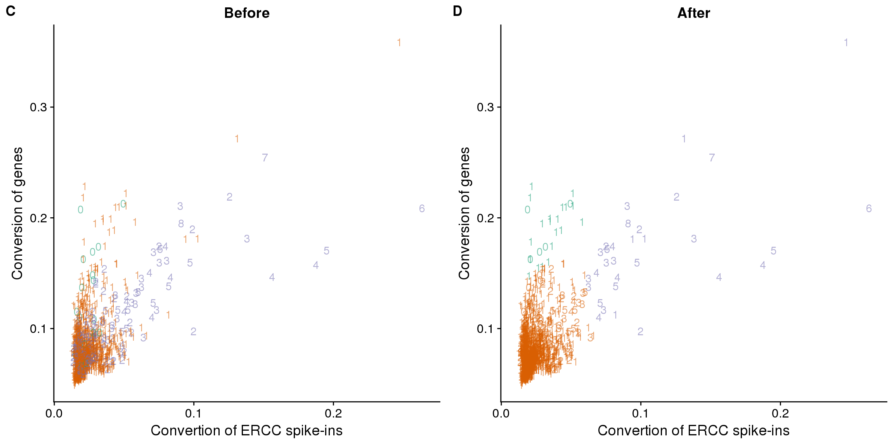
## look at human genes
eset_hs <- eset[fData(eset)$source == "H. sapiens", ]
head(featureNames(eset_hs))[1] "ENSG00000000003" "ENSG00000000005" "ENSG00000000419" "ENSG00000000457"
[5] "ENSG00000000460" "ENSG00000000938"## remove genes of all 0s
eset_hs_clean <- eset_hs[rowSums(exprs(eset_hs)) != 0, ]
dim(eset_hs_clean)Features Samples
19348 1536 ## convert to log2 cpm
mol_hs_cpm <- cpm(exprs(eset_hs_clean), log = TRUE)
mol_hs_cpm_means <- rowMeans(mol_hs_cpm)
summary(mol_hs_cpm_means) Min. 1st Qu. Median Mean 3rd Qu. Max.
2.413 2.482 3.180 3.858 4.761 12.999 mol_hs_cpm <- mol_hs_cpm[mol_hs_cpm_means > median(mol_hs_cpm_means), ]
dim(mol_hs_cpm)[1] 9674 1536## pca of genes with reasonable expression levels
pca_hs <- run_pca(mol_hs_cpm)
plot_pca_id <- plot_pca(pca_hs$PCs, pcx = 1, pcy = 2, explained = pca_hs$explained,
metadata = pData(eset_hs_clean), color = "chip_id")## all filter
anno$filter_all <- anno$cell_number == 1 &
anno$mol_egfp > 0 &
anno$valid_id &
anno$cut_off_reads &
anno$cut_off_unmapped &
anno$cut_off_ercc &
anno$cut_off_genes &
anno$molecule_outlier == "FALSE" &
anno$conversion_outlier == "FALSE"
sort(table(anno[anno$filter_all, "chip_id"]))
NA18511 NA19160 NA19101 NA18855 NA19098 NA18870
104 123 124 171 187 214 table(anno[anno$filter_all, c("experiment","chip_id")]) chip_id
experiment NA18511 NA18855 NA18870 NA19098 NA19101 NA19160
20170905 0 37 32 0 0 0
20170906 0 0 0 41 22 0
20170907 0 29 0 23 0 0
20170908 0 0 32 0 31 0
20170910 0 30 0 0 24 0
20170912 0 0 42 37 0 0
20170913 0 41 0 0 0 9
20170914 0 0 0 0 24 34
20170915 24 34 0 0 0 0
20170916 13 0 0 0 23 0
20170917 0 0 0 40 0 12
20170919 11 0 0 46 0 0
20170920 39 0 0 0 0 18
20170921 0 0 45 0 0 22
20170922 17 0 25 0 0 0
20170924 0 0 38 0 0 28genes_unmapped <- ggplot(anno,
aes(x = detect_hs, y = unmapped_ratios * 100,
col = as.factor(chip_id),
label = as.character(cell_number),
height = 600, width = 2000)) +
scale_colour_manual(values=cbPalette) +
geom_text(fontface = 3, alpha = 0.5) +
geom_vline(xintercept = cut_off_genes,
colour="grey", linetype = "longdash") +
geom_hline(yintercept = cut_off_unmapped * 100,
colour="grey", linetype = "longdash") +
labs(x = "Number of detected genes / sample",
y = "Percentage of unmapped reads (%)")
genes_spike <- ggplot(anno,
aes(x = detect_hs, y = ercc_percentage * 100,
col = as.factor(chip_id),
label = as.character(cell_number),
height = 600, width = 2000)) +
scale_colour_manual(values=cbPalette) +
scale_shape_manual(values=c(1:10)) +
geom_text(fontface = 3, alpha = 0.5) +
geom_vline(xintercept = cut_off_genes,
colour="grey", linetype = "longdash") +
geom_hline(yintercept = cut_off_ercc * 100,
colour="grey", linetype = "longdash") +
labs(x = "Number of detected genes / samlpe",
y = "Percentage of ERCC spike-in reads (%)")
reads_unmapped_num <- ggplot(anno,
aes(x = mapped, y = unmapped_ratios * 100,
col = as.factor(experiment),
label = as.character(cell_number),
height = 600, width = 2000)) +
geom_text(fontface = 3, alpha = 0.5) +
geom_vline(xintercept = cut_off_reads,
colour="grey", linetype = "longdash") +
geom_hline(yintercept = cut_off_unmapped * 100,
colour="grey", linetype = "longdash") +
labs(x = "Total mapped reads / sample",
y = "Percentage of unmapped reads (%)")
reads_spike_num <- ggplot(anno,
aes(x = mapped, y = ercc_percentage * 100,
col = as.factor(experiment),
label = as.character(cell_number),
height = 600, width = 2000)) +
geom_text(fontface = 3, alpha = 0.5) +
geom_vline(xintercept = cut_off_reads,
colour="grey", linetype = "longdash") +
geom_hline(yintercept = cut_off_ercc * 100,
colour="grey", linetype = "longdash") +
labs(x = "Total mapped reads / sample",
y = "Percentage of ERCC spike-in reads (%)")
plot_grid(genes_unmapped + theme(legend.position = c(.7,.9)),
genes_spike + theme(legend.position = "none"),
labels = letters[1:2])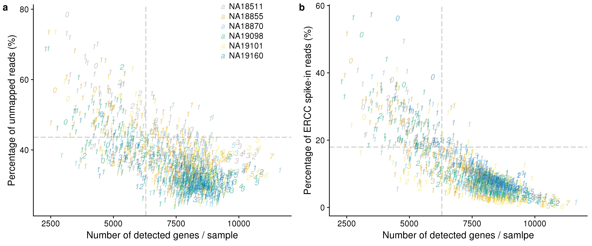
plot_grid(reads_unmapped_num + theme(legend.position = c(.7,.9)),
reads_spike_num + theme(legend.position = "none"),
labels = letters[3:4])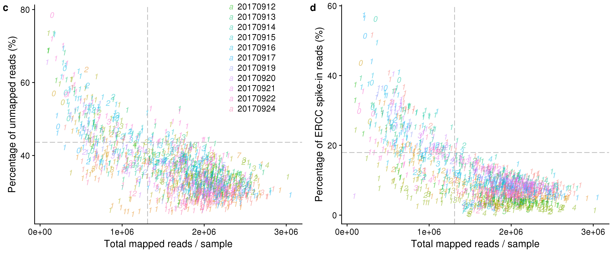
write.table(data.frame(row.names(anno), anno[,"filter_all"]),
file = "../data/quality-single-cells.txt", quote = FALSE,
sep = "\t", row.names = FALSE, col.names = FALSE)\(~\)
These filters are later combined with metadata in our eset objects.
\(~\)
exps <- unique(anno$experiment)
for (index in 1:length(exps)) {
tmp <- subset(anno,
experiment == exps[index],
select=c(cut_off_reads, unmapped_ratios, cut_off_unmapped,
ercc_percentage, cut_off_ercc, cut_off_genes,
ercc_conversion, conversion,
conversion_outlier, filter_all))
tmp <- data.frame(sample_id=rownames(tmp), tmp)
write.table(tmp,
file = paste0("output/sampleqc.Rmd/",exps[index],".txt"),
sep = "\t", quote = FALSE, col.names = TRUE, row.names = F)
}
# to import each text
#library(data.table)
#b <- fread("output/sampleqc.Rmd/20170905.txt", header=T)
pheno_labels <- rbind (
c("cut_off_reads",
"QC filter: number of mapped reads > 85th percentile among zero-cell samples"),
c("unmapped_ratios",
"QC filter: among reads with a valid UMI, number of unmapped/number of mapped (unmapped/umi)"),
c("cut_off_unmapped",
"QC filter: unmapped ratio < 30th percentile among zero-cell samples"),
c("ercc_percentage",
"QC filter: number of reads mapped to ERCC/total sample mapped reads (reads_ercc/mapped)"),
c("cut_off_ercc",
"QC filter: ercc percentage < 15th percentile among zero-cell samples"),
c("cut_off_genes",
"QC filter: number of endogeneous genes with at least one molecule (detect_hs) > 85th percentile among zero-cell samples"),
c("ercc_conversion",
"QC filter: among ERCC, number of molecules/number of mapped reads (mol_ercc/reads_ercc)"),
c("conversion",
"QC filter: among endogeneous genes, number of molecules/number of mapped reads (mol_hs/reads_hs)"),
c("conversion_outlier",
"QC filter: microscoy detects 1 cell AND ERCC conversion rate > .094"),
c("filter_all",
"QC filter: Does the sample pass all the QC filters? cell_number==1, mol_egfp >0, valid_id==1, cut_off_reads==TRUE, cut_off_ercc==TRUE, cut_off_genes=TRUE"))
write.table(pheno_labels,
file = paste0("../output/sampleqc.Rmd/pheno_labels.txt"),
sep = "\t", quote = FALSE, col.names = F, row.names = F)
#b <- fread("../output/sampleqc.Rmd/pheno_labels.txt", header=F)R version 3.4.1 (2017-06-30)
Platform: x86_64-redhat-linux-gnu (64-bit)
Running under: Scientific Linux 7.2 (Nitrogen)
Matrix products: default
BLAS/LAPACK: /usr/lib64/R/lib/libRblas.so
locale:
[1] LC_CTYPE=en_US.UTF-8 LC_NUMERIC=C
[3] LC_TIME=en_US.UTF-8 LC_COLLATE=en_US.UTF-8
[5] LC_MONETARY=en_US.UTF-8 LC_MESSAGES=en_US.UTF-8
[7] LC_PAPER=en_US.UTF-8 LC_NAME=C
[9] LC_ADDRESS=C LC_TELEPHONE=C
[11] LC_MEASUREMENT=en_US.UTF-8 LC_IDENTIFICATION=C
attached base packages:
[1] parallel stats graphics grDevices utils datasets methods
[8] base
other attached packages:
[1] testit_0.7 bindrcpp_0.2 Biobase_2.38.0
[4] BiocGenerics_0.24.0 tibble_1.4.2 MASS_7.3-47
[7] edgeR_3.20.9 limma_3.34.9 dplyr_0.7.4
[10] cowplot_0.9.2 ggplot2_2.2.1
loaded via a namespace (and not attached):
[1] Rcpp_0.12.16 RColorBrewer_1.1-2 pillar_1.2.1
[4] compiler_3.4.1 git2r_0.21.0 plyr_1.8.4
[7] bindr_0.1.1 tools_3.4.1 digest_0.6.15
[10] evaluate_0.10.1 gtable_0.2.0 lattice_0.20-35
[13] pkgconfig_2.0.1 rlang_0.2.0 yaml_2.1.18
[16] stringr_1.3.0 knitr_1.20 locfit_1.5-9.1
[19] rprojroot_1.3-2 grid_3.4.1 glue_1.2.0
[22] R6_2.2.2 rmarkdown_1.9 magrittr_1.5
[25] backports_1.1.2 scales_0.5.0 htmltools_0.3.6
[28] assertthat_0.2.0 colorspace_1.3-2 labeling_0.3
[31] stringi_1.1.7 lazyeval_0.2.1 munsell_0.4.3 This R Markdown site was created with workflowr